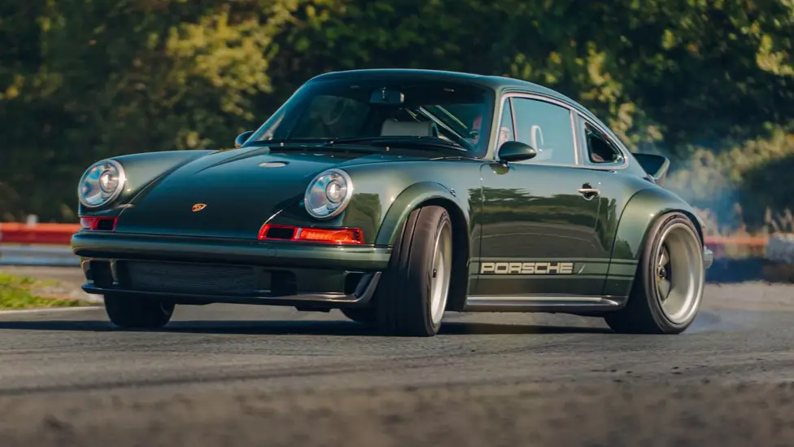

Ferrari 296 GTB

"We gave the Ferrari 296 GTB full marks, the lesser-spotted 10/10 reserved only for the best of the very best. Which got us wondering, which cars do we actually think are the best of the very best? A search through the TG archive has revealed these thoroughbreds."
Bugatti Chiron

Veyron's successor is a car that does things no other car can; one with a distinct personality."
Porsche Singer DLS
“Singer's Dynamics and Lightweighting Study is indulgent, rewarding and intense, an even bigger step on from one of their normal restorations than we’d expected.”
Toyota GR Yaris

“The GR Yaris is superb - the best Toyota we've ever driven.”
Audi Quattro

“The car that did more to further the cause of the performance car than almost any other, Audi’s 4WD icon still has relevance today.”